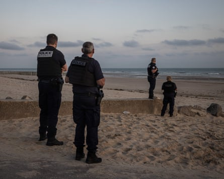
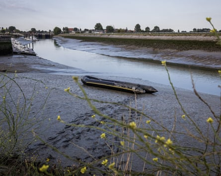
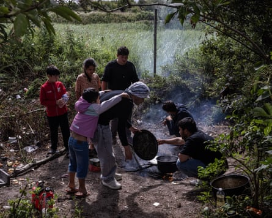
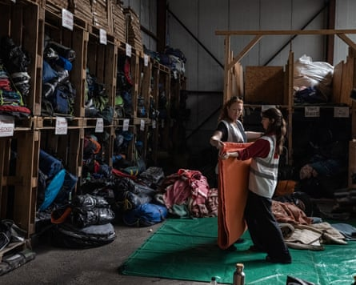
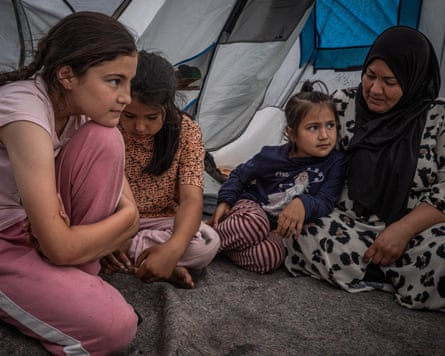
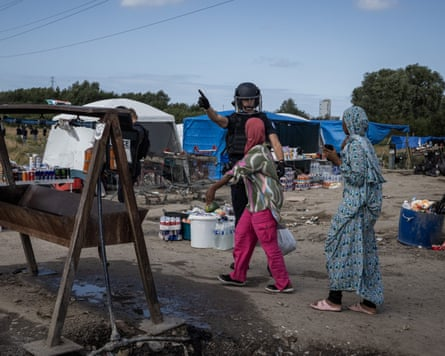

I t is 5.45am, the dawn light strengthening. A large inflatable dinghy carrying 20 or more has come discreetly to the east end of the beach at Gravelines. Though it looks packed from the shore, it is perhaps only two-thirds full, according to regular observers, each person wearing a fluorescent lifejacket, soon to embark on a risky crossing from France to the UK.
For a few minutes the boat halts several metres from shore, probably waiting for others to run from the scrubland behind the beach where some have been hiding all night to try to get on. But the only people waiting are a small group of journalists. Once it becomes clear there is nobody else to pick up, the boat’s engine fires up, heading north-west to England, while one person onboard waves back with the sign of peace.
In London, where France’s president, Emmanuel Macron, is visiting, further proposals are being discussed to stem the numbers of people coming to the UK in small boats. But on Thursday morning in northern France, the more significant variables are the strength of the wind and the height of the waves. It is calm, ideal for crossing after days of higher winds.
As the dinghy sets off, it becomes clear that a small number of French police officers have been watching from the dunes, about a kilometre or so away. It is estimated that 1,800 officers patrol the coast, a security effort partly funded by Britain, which is paying France about £480m under a three-year deal ending in 2026. But the size of the beaches and the length of the coastline used by migrants and refugees – roughly 70 miles – makes stopping all the boats impossible.
Police on Sangatte beach near Calais on Wednesday.Photograph: Ed Ram/The Guardian
Even so, leaving is not simple. Another dinghy had got stuck in the mud as a group tried to embark from the canal that runs through the centre of Gravelines at about 5am. Though the people onboard were rescued by the fire brigade, according to aid workers at Utopia 56 the police then used teargas to break up a group that had collected. Others then tried to restart the boat’s engine but, with the tide going out, the effort failed and for a time they were stuck in the thick canal mud before being rescued.
The most significant factor, though, is the determination of those to arrive, the human spirit, so often driven by necessity, which overpowers the relentless political and security initiatives during 20 years of efforts to half irregular flows of people to the UK. It is an obvious point but, in debates about migrant numbers, essential to repeat.
Two days earlier, in the makeshift camp near Grande-Synthe west of Dunkirk, where people typically have originally come from troublespots and war zones in Asia and Africa, Khaled, an Afghan, suggests that the Guardian search on ChatGPT on a mobile phone. This is unexpected, but he wants to show that his wife is a noted human rights activist – a picture produced in a search looks exactly like her.
“Please don’t identify us,” adds Khaled (not his real name), because “it is dangerous for my parents back home. We don’t want the Taliban to know we have left the country.” The couple and their boy, now five, have been travelling overland for a year after initially fleeing to Iran, but such is his nervousness that he does not want their faces to be photographed as he talks, his son playing around him.
An abandoned boat next to a canal that leads to the sea in Gravelines.Photograph: Ed Ram/The Guardian
People have made lengthy, dangerous journeys to get this far. One, Bashir, says he has already travelled “nine days in a boat from Senegal from Spain” – and so the prospect of crossing the Channel does not appear to unduly worry a person like him, though 19 people have been reported to have died or disappeared trying to make the crossing so far this year. Like several others, he says French police slashed a dinghy he had got into with a knife, making it sink before it had left shallow water, a tactic exposing refugees and migrants to more danger and trauma. “I will try again,” he says simply.
The squalor in the camp remains profound and in many respects little has changed in the two-and-a-half years since this reporter previously visited . There is no sanitation, though one charity, Roots, provides basic showers. Charities distribute food and provide electricity for phone charging. People cook on open fires – and offer visiting reporters tea.
People cook in a makeshift camp near Loon-Plage, Dunkirk, on Tuesday.Photograph: Ed Ram/The Guardian
Though it feels safe to walk around with a photographer and talk to the those at the camp, there are dangers. There were two non-fatal shootings on Tuesday and Wednesday. On Tuesday, the police presence was nervy as the Guardian arrived just as the victim, who had been shot in the leg three times, was evacuated by ambulance. Two migrants were killed in separate incidents last month. Aid groups such as Utopia 56 argue that if the camps were “more dignified” there would be less violence.
This time, however, there is a growing minority of women and children. Next to the Afghans are camped a group of Somalis. Five women fleeing the violent, unstable country gather around to talk. Yasmiin acknowledges she tried and failed to obtain asylum in the Netherlands, and says because the UK is outside the EU’s system she has a second chance in the UK, before she playfully suggests marriage. “No, not you. Do you have a brother?” she says.
Katie Sweetingham, a coordinator with Care4Calais, a charity that works with refugees and migrants, providing clothes, tents and other non-food items, says there has been a huge increase in families and that at a recent clothes distribution in Dunkirk “we had about 100 women and about 30 children” turn up. For comparison, the charity budgets for handing out clothes or other items for up to 700 men, though it also admits that stockpiles of clothes and tents are not as high as it would like.
Care4Calais volunteers fold blankets in a warehouse in Calais.Photograph: Ed Ram/The Guardian
Aid workers are not sure why the numbers of women and children have gone up but there is tentative evidence that the cause may be the people smugglers’ new taxi boat model, where a large dinghy waits near the edge of a beach, allowing as many people as possible to pile on, creating a dangerous shallow-water scramble that is particularly difficult for children and family groups to navigate.
Asmaan, 13, who is nominated by her mother as the family spokesperson because she speaks some English, says she and her family, from Mazar-i-Sharif in Afghanistan, were unable to get on a small boat five days earlier. “We could not get on together, it was too difficult,” though the effort was moot because, she says, the boat was slashed by the French police.
A family in a tent in a makeshift migrant camp near Loon-Plage.Photograph: Ed Ram/The Guardian
Yet, even allowing for the new emphasis on disabling the taxi boats, so far this year as of 6 July at least 21,117 people have made the crossing by a small boat, up 56% compared to the same period in 2024. The asylum claims made by those coming to the UK via small boats are successful 53% of the time . But people coming from certain countries have a very high rate of asylum claims accepted , such as 97% for Afghanistan.
Organisations working with refugees and migrants estimate there are perhaps 2,500 in and around Calais and Dunkirk at the moment. Every two days, French police, partly funded by British taxpayers, clear out informal camps in Calais, taking or slashing tents and removing any possessions if their owners are not present. Afterwards, Care4Calais distributes replacements and the cycle repeats.
Police clear an area near a food and assistance distribution point near Loon-Plage.Photograph: Ed Ram/The Guardian
In the rough, wooded open ground near Dunkirk, the clearouts typically take place on Wednesday mornings. However, this week the effort did not take place, prompting some charities to assume it was to avoid negative publicity while Macron was in London and while journalists were likely to be about.
Instead, according to Thomas Gilbert, the founder of the refugee support charity Roots, French refuse workers quickly cleared away “three or four skiploads of rubbish” on Wednesday morning that had been collected by volunteers.
“It’s just really frustrating, especially today, it took us probably five or six days for three different groups to collect the rubbish, and they can just show up because of what is happening in the UK,” he says. A more humane approach to the migration crisis is possible, he argues, but it is not the path politicians choose.
Names of refugees and migrants have been changed